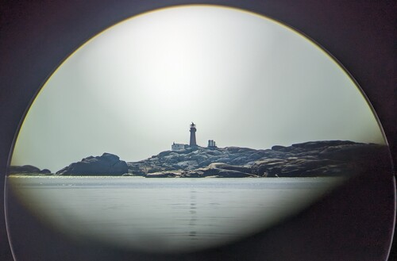

{kind=link}
 Gothenburg
GothenburgTorbjørn Ludvigsen is an engineer, inventor and artist residing in Gothenburg, Sweden. He is known as the inventor of the Hangprinter, which he started developing during his Master's studies in physics in 2014. He believes society benefits from RepRap and open source technology since they speed up technical development and are readily available for common people.
He has published all his work under open-source licences and built a community around the Hangprinter. See hangprinter.org for further info about the Hangprinter Community. You can read about technical development, plans, and reflections on his blog. Hangprinter was recently covered in several newspapers for winning a patent case with crowdfunded support.
During his work on the Hangprinter he has also invented some related technology that has turned out generally useful, like
He has recently started using Hangprinter to create artwork that he feels resonates with him personally. As a sailor growing up on the coast, he takes inspiration from the sea. "I want to make things that I want in my own home and things that I want to give as a gift to my loved ones", he says.
Check out some of his artwork here.
